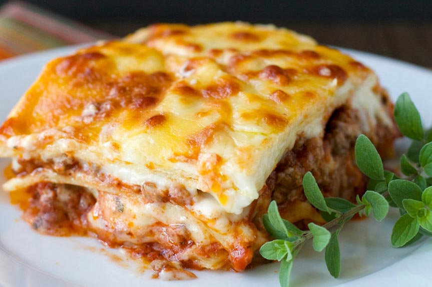

Lasaña

Descripción
La mejor lasaña es la casera. No sé si os lo comenté alguna vez pero la lasaña es uno de mis platos de pasta preferido. Quizás aprendí a hacer lasaña antes que los canelones por una razón, a mi madre le encanta.
Ella me dejaba preparados todos los ingredientes excepto la salsa bechamel, que la preparaba a su gusto, un poco más cremosa, para casi tomarla con cuchara. Espolvorear con mucho queso y a hornear, cuando llegaba de trabajar tenía la lasaña en su punto, perfecta para comer.
Este clásico de la cocina es famoso en todo el mundo, no sólo en Italia. Ideal para llevar en el tupper al trabajo o al cole, y que sin duda triunfa entre los más pequeños de casa. No os paséis con la cantidad, con una porción es suficiente, una receta bastante completa y te da para superar un día lleno de energía.
Lo que siempre os recomiendo es emplear ingredientes de calidad, desde la pasta, en este caso lasagna Garofalo, una de las mejores pastas de Italia. Y por supuesto, los rellenos, hoy de carne, pero tenéis muchísimas formas de rellenarla. Siguiendo la receta podéis hacerla lasaña con verduras, la clásica lasaña con atún o lasaña con pescado, que es una gran opción, atún, merluza, incluso combinarla con marisco.
Ingredientes
- Para el relleno (boloñesa de carne): 500 g. de carne (una mezcla de cerdo y ternera)
- 2 pimientos rojos
- 2 zanahorias
- 2 dientes de ajo
- 150 g. de bacon o panceta
- 2 cebollas grandes
- 250 g. de tomate natural (1 vaso aproximadamente)
- 250 ml de vino blanco (200 ml. aproximadamente)
- 100 ml. de aceite de oliva virgen extra
- 1 cucharita colmada de orégano seco (o hierbas provenzales)
- Sal y pimienta negra recién molida (al gusto de cada casa)
- 12 láminas de lasaña o lasagna Garofalo
- Para hacer la bechamel: (para un litro más o menos, la suficiente para la lasaña): 125 g de harina de trigo de todo uso
- 125 g de mantequilla
- 1 litro de leche entera
- Una pizca de nuez moscada (unos 4 g.)
- Sal y pimienta negra recién molida (al gusto de cada casa)
- Para finalizar y gratinar la lasaña: 100-120 g. de queso rallado tipo Parmesano (o mezcla con vuestro queso preferido para gratinar)
Preparación
- Calentamos una cazuela grande de agua, la más ancha de casa. Cuando empiece a hervir echamos 2 puñados generosos de sal.
- Introducimos las láminas de lasaña una a una sin que se toquen (para que no se peguen entre ellas). Ahora podemos encontrar infinidad de tipos de lasaña donde no hace hidratarla como se hacía antes. En casa muchas veces para ahorrar tiempo empleo las que se hidratan con la bechamel y el jugo que suelta la salsa al hornear.
- Si lo hacéis de la manera tradicional tenemos que remover con una cuchara de madera y en unos 10 minutos sacamos las láminas. Las estiramos encima de unas hojas de papel absorbente de cocina. Aunque os parezca que no están, acabarán haciéndose en el horno.
- CEl siguiente paso será lavar muy bien todas las verduras que vamos a emplear en el relleno. En la receta os aconsejo el relleno de la clásica salsa boloñesa, zanahorias, ajo, pimientos y cebolla.
Volver al Index